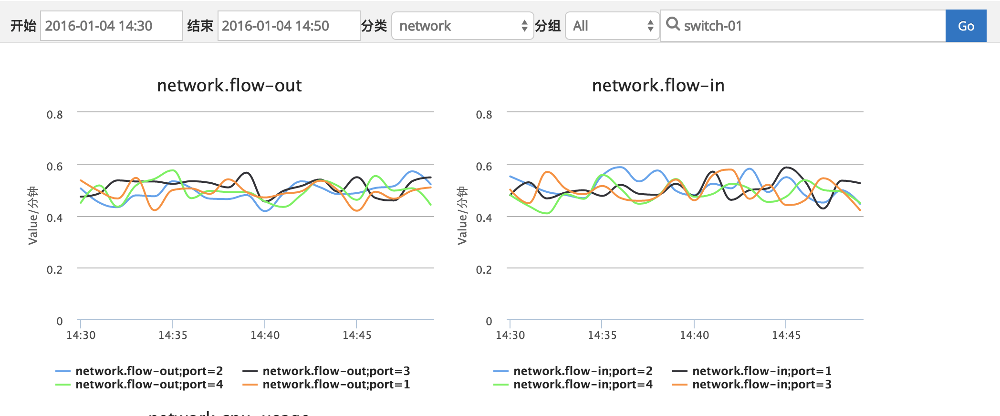
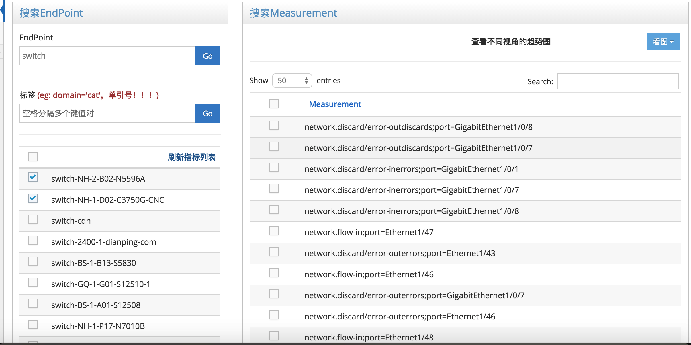

服务端使用说明 访问链接
监控服务端的各项系统指标，包括：数据库监控、Paas系统监控、网络监控等
1.可以按照既定模板进行指标查看，下图显示服务端监控的模板化指标查看
2.可以自定义指标展示模板，如下图所示
（1）可以根据EndPoint（监控对象的唯一ID）关键字或tag来进行搜索
（2）点击“刷新指标列表”来获取当前所有指标（Measurement）
（3）勾选至少一个Measurement，点击看图，选择Endpoint视角或easure视角
Metric-broker-service接口调用请求说明
http请求方式: POST（请使用http协议）
http://metric-broker.dp/metric-broker-service/api/metric
参数说明
| 参数 | 说明 |
|---|---|
| data | 要发送的Json数据，必需，需要Url Encode |
Json数据
{
"category":"network",
"entities":[
{
"measure":"network.flow-in",
"timestamp":1451268386119,
"tags":{
"port":"1",
"endPoint":"switch-01"
},
"fields":{
"value":0.7220096548596434
}
},
{
"measure":"network.flow-in",
"timestamp":1451268386119,
"tags":{
"port":"2",
"endPoint":"switch-01"
},
"fields":{
"value":0.19497605734770518
}
}
]
}
| 属性 | 说明 |
|---|---|
| category | 监控分类，包括system, network, database；必需，不能包含特殊字符 |
| measure | 监控指标名称，必需，以“category.”开头。例如，网络设备进口流量：“network.flow-in” |
| timestamp | 监控数据产生的时间戳，必需，毫秒为单位的时间，注意值不要加引号 |
| tags | 标签,必需，且必须有endPoint这个key，endPoint值为当前监控对象的唯一ID；如有其它标签，可以添加，一般适用于网络设备端口等。 |
| fields | 采集的监控数据必须，一般只需一个key：{"value":data}，注意value值不要加引号 |
示例
http://metric-broker.dp/metric-broker-service/api/metric?data={encodedData}
返回说明
{"status":500, "info":"failed"} ——> 失败
{"status":200, "info":"success"} ——> 成功